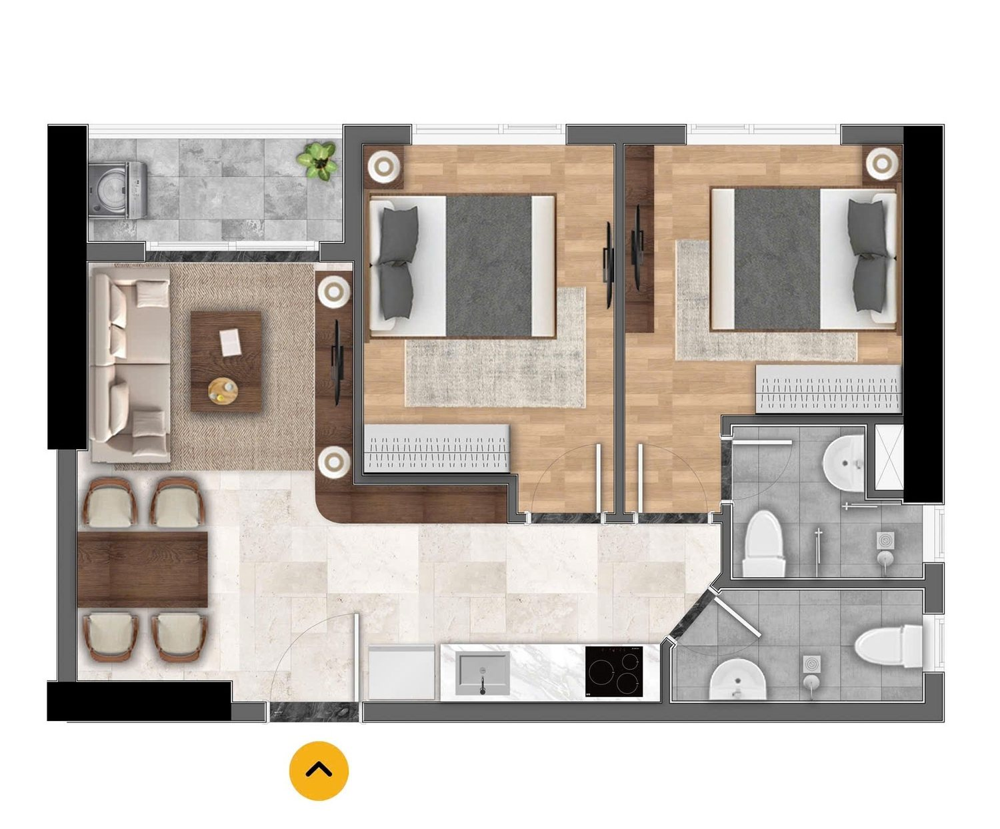
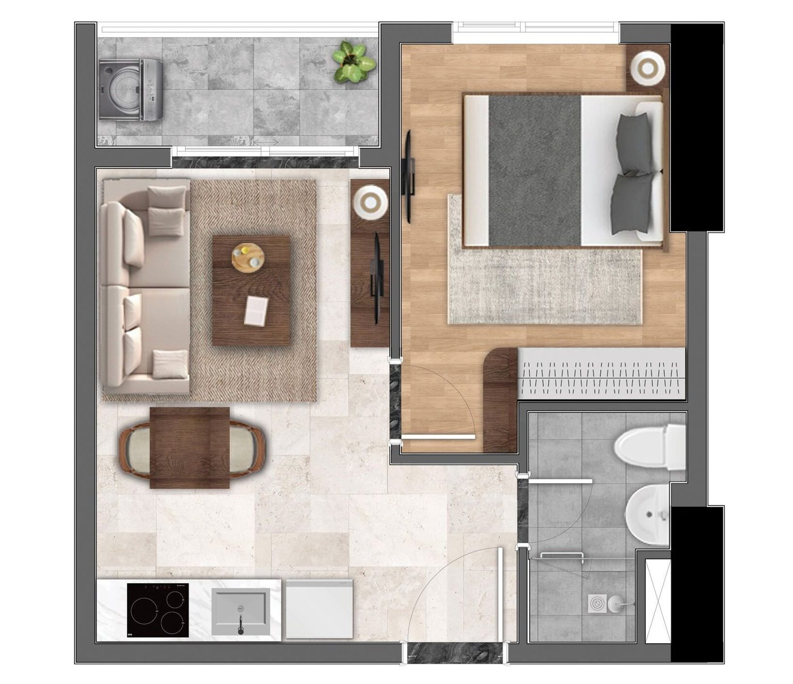
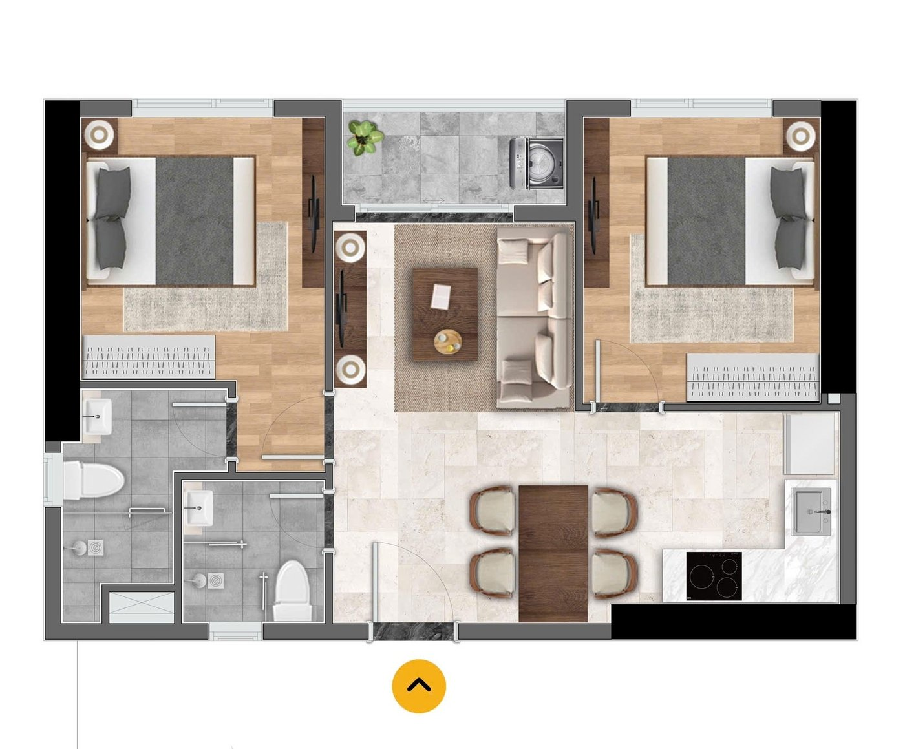

Bcons City (Dĩ An, Bình Dương): thông tin dự án và mặt bằng căn hộ

1. Tóm tắt nhanh
Dĩ An
đã thu thập
khác nhau rõ rệt
Bcons City là dự án căn hộ của Bcons tại Dĩ An, Bình Dương, với hơn 4.000 căn chia thành 5 phân khu (Green Topaz, Green Emerald, Green Diamond, Green Sapphire và Bcons City). Bốn tháp đầu đã bàn giao tháng 10/2025. Bài tổng hợp bốn mặt bằng của khối Bcons City (hình dựng 3D, chưa có diện tích).
| Hạng mục | Thông tin |
|---|---|
| Tên dự án | Bcons City (Dĩ An) |
| Chủ đầu tư | Bcons |
| Quy mô | Khoảng 4,4 ha, hơn 4.000 căn, 5 phân khu |
| Tiến độ | 4 tháp đầu bàn giao tháng 10/2025; Green Diamond dự kiến 2027 |
| Giá bán chính thức | Chưa có bảng giá chính thức trong bài; xem mục 5 |
2. Vị trí
Dự án nằm tại Dĩ An. Bài chỉ nêu thông tin công bố, không đánh giá vị trí.
3. Sản phẩm
Bảng dưới đây liệt kê toàn bộ mặt bằng đã thu thập; những mẫu có diện tích gần như trùng nhau được ghi chú “cùng mặt bằng”, và phần hình chỉ đặt các mặt bằng khác nhau. Diện tích có thể khác nhau tùy nguồn (tim tường hay thông thủy); cột trống nghĩa là tài liệu không công bố.
| Loại / mã | Số PN | Tim tường (m²) | Thông thủy (m²) | Ghi chú |
|---|---|---|---|---|
| None | 2 | – | 52,0 | |
| None | 1 | – | 38,0 | |
| None | 2 | – | 52,0 | |
| None | 2 | – | 52,0 |
Căn hộ 2 phòng ngủ
Căn hộ 1 phòng ngủ

Căn hộ 2 phòng ngủ


4. Tiện ích và thiết kế
Thông tin tiện ích chi tiết xem trang chính thức của dự án; bài này tập trung vào mặt bằng căn hộ.
5. Giá tham khảo (gần đúng)
| Nguồn / loại căn | Mức giá | Ghi chú |
|---|---|---|
| Căn 1PN Green Emerald 36 m² | khoảng 1,9 tỷ | |
| Green Diamond | khoảng 53 triệu/m² | Giá rao |
Giá rao quanh 50 triệu/m² (Green Diamond); các tháp khác thấp hơn.
6. Tiến độ và nguồn cung
- Chưa có thông tin chính thức trong bài: số căn từng mẫu, bảng giá hiện hành và tiến độ chi tiết; hãy hỏi chủ đầu tư.
7. Kết luận
Bài tổng hợp các mặt bằng đã công bố của Bcons City (Dĩ An) để dễ đối chiếu. Khi cân nhắc một căn cụ thể, hãy xác nhận mã căn, diện tích tim tường và thông thủy và giá hiện hành với chủ đầu tư.